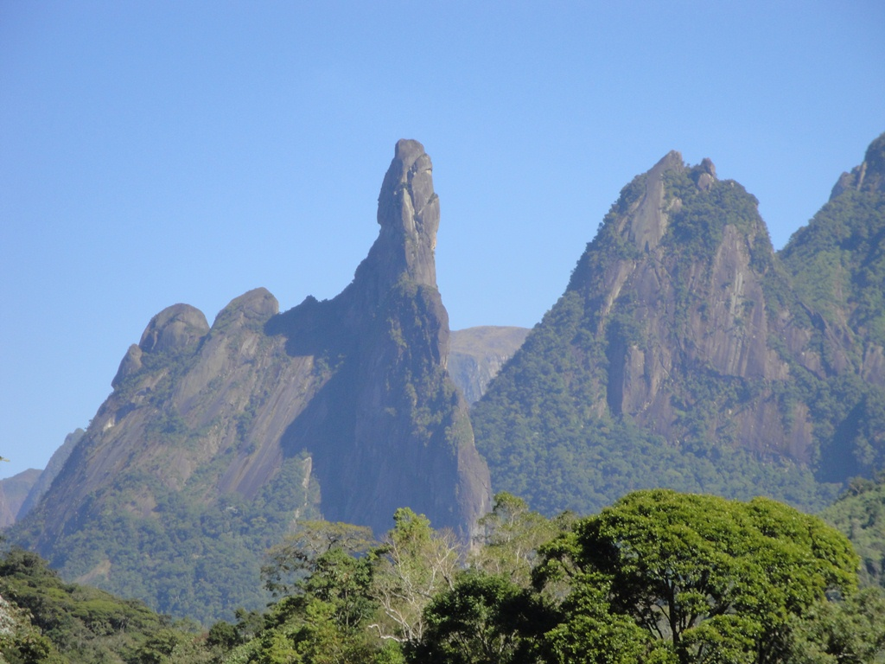

Vem para Terê, a cidade de Thereza.
Localizada no topo da Serra dos Órgãos, na região central do Estado do Rio de Janeiro, Teresópolis fica a aproximadamente 90km da capital carioca, e o principal acesso é através da BR-116, passando por Guapimirim. Também está localizada no centro da Região Serrana do Rio de Janeiro, conhecida como Serra Verde Imperial,
e faz fronteira com os municípios de Petrópolis (acesso pela BR-495/Estrada Itaipava-Teresópolis) e Nova Friburgo (acesso pela RJ-130/Estrada Terê-Fri).
Faça um Tour pelos nossos principais pontos turísticos:
Dedo de Deus:

Pedra da Tartaruga:

Parque Nacional: